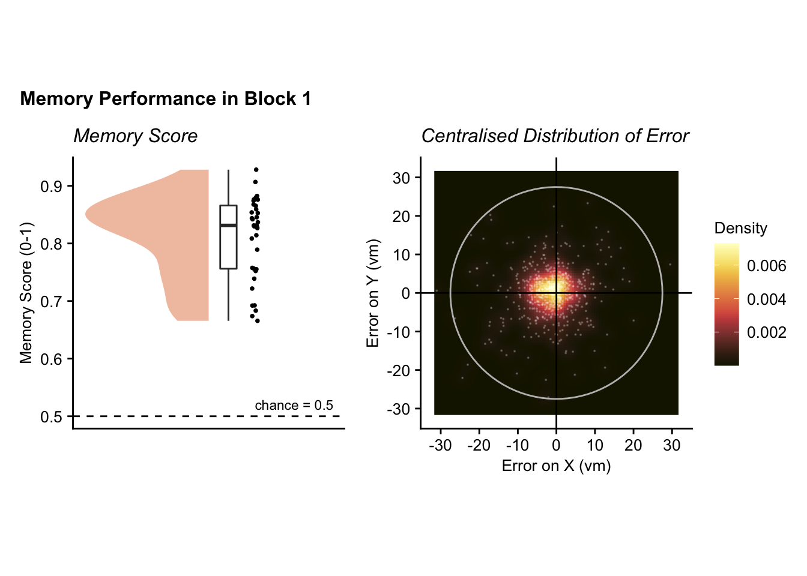
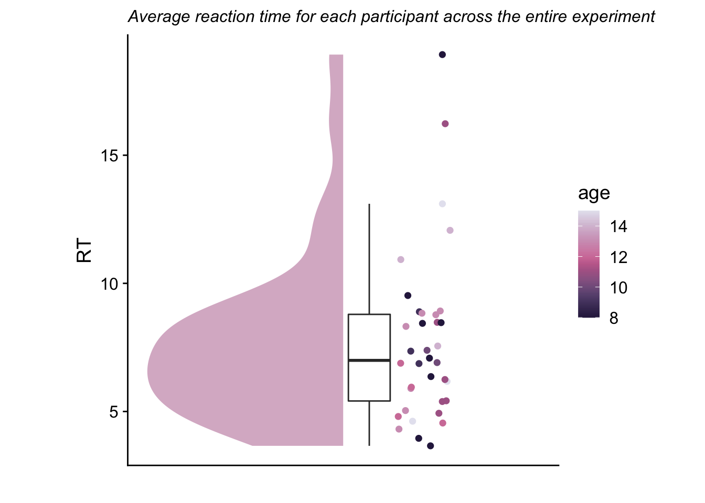
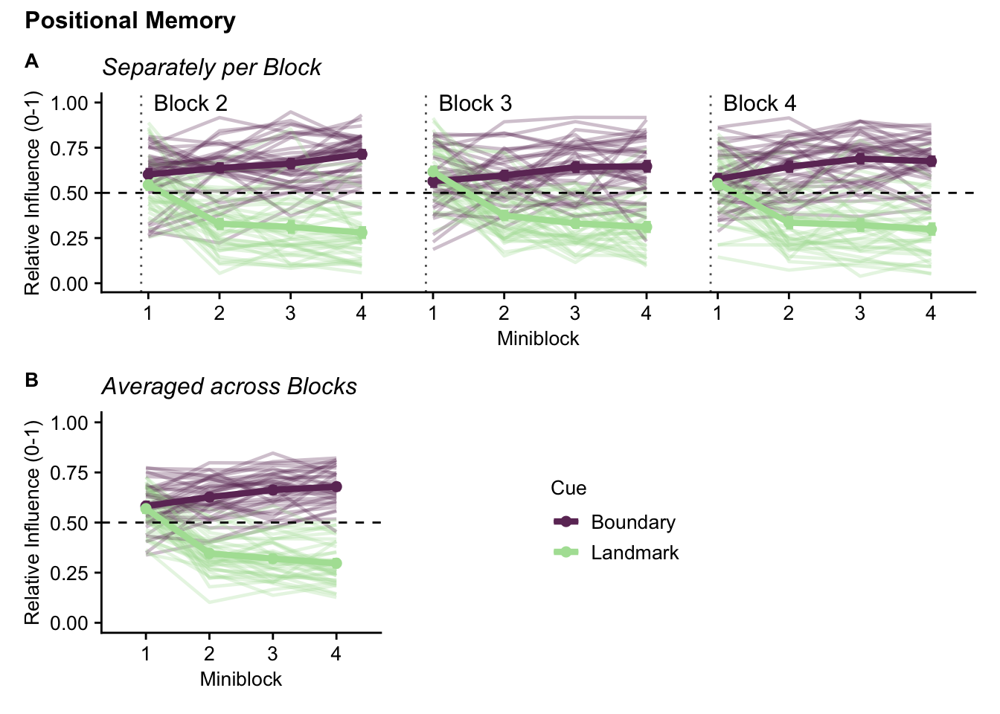

3 Analysis
library(lme4)
library(tidyverse)
library(broom)
library(ggsignif)
library(patchwork)
library(scico)
library(Cairo)
library(Hmisc)
library(gghalves)
library(cowplot)
library(ggnewscale)
library(ggeffects)
library(here)
library(effsize)blocks <- c(1, 2, 3, 4)
trials <- c(1:16)
objects <- c("monster", "partyhat", "lamp", "flower")
if (dir.exists(here("figures"))){dir.create(here("figures"))}## Warning in dir.create(here("figures")): '/Users/amakova/Desktop/landmark_boundary/figures' already existsretrieving subject IDs from the directory
fn <- list.files(path = here("data"), pattern="*_feedbackPhase_block4_Sum")
subjects <- c()
for (i_file in length(fn)) {
subjects <- substr(fn,1,4)
}Sum_all <- read_delim(here("data" ,"Sum.txt"), delim = " ", col_names = TRUE) # JB: path specification. TO DO: column specification. Would save work when later recoding the variables for mixed model## Rows: 2413 Columns: 50## ── Column specification ───────────────────────────────────────────────────────────────────────────────────────────────────────────────────────────────────
## Delimiter: " "
## chr (2): cue, object
## dbl (48): ID, age, age_c, block, miniblock, mini, objectTrial, trial, sec2Beg, dropTime, secTrialRepl, trialLen, sec2End, landmarkX, landmarkY, landmar...##
## ℹ Use `spec()` to retrieve the full column specification for this data.
## ℹ Specify the column types or set `show_col_types = FALSE` to quiet this message.Traj <- read_delim(here("data" ,"Traj.txt"), delim = " ", col_names = TRUE) # JB added loading of trajectory data because used below. TO DO: column specification.## Rows: 2796135 Columns: 15## ── Column specification ───────────────────────────────────────────────────────────────────────────────────────────────────────────────────────────────────
## Delimiter: " "
## chr (1): object
## dbl (14): ID, block, trial, sec2Frame, charX, charZ, charY, rotQua1, rotQua2, rotQua3, rotQua4, rotAngle, miniblock, cue##
## ℹ Use `spec()` to retrieve the full column specification for this data.
## ℹ Specify the column types or set `show_col_types = FALSE` to quiet this message.circleFun <- function(center = c(0,0), r = 27.5, npoints = 100){
tt <- seq(0,2*pi,length.out = npoints)
xx <- center[1] + r * cos(tt)
yy <- center[2] + r * sin(tt)
return(data.frame(x = xx, y = yy))
}
#function dist() calculates distance between given 2 points (loc1, loc2) while taking in their X and Y separately
dist <- function(loc1X, loc1Y, loc2X, loc2Y) {
d = sqrt(((loc1X-loc2X)**2)+((loc1Y-loc2Y)**2))
return(d)
}Hypothesis: Boundary-dependent object position memory will improve between 8 and 15 years of age, while landmark-dependent object memory will stay relatively constant.
DISTANCE/LOCATION ANALYSIS Descriptives
exclusion factors filtering timeout sessions
out <- c()
for (i_sub in subjects) {
score <- t.test(subset(Sum_all, ID==i_sub & block==1)$memoryScoreTraj,
mu=0.5, var.equal = FALSE, alternative = "greater") %>% tidy()
if (score$p.value > 0.05) {
out <- c(out, i_sub)
}
}
print(out)## [1] 2739 9431#data sorting
i_sub = subjects[5]
XY <- filter(Traj, ID == i_sub) %>% select(ID, charX, charY)
XY <- XY[sample(nrow(XY), 1000), ]
graph_sub <- filter(Sum_all, ID == i_sub)
XY <- mutate(XY, distance = NA, outside = NA)
for (i_point in 1:1000){
dista = dist(XY$charX[i_point], XY$charY[i_point], graph_sub$objX[10], graph_sub$objY[10])
XY$distance[i_point] <- dista
if (dista > graph_sub$error[10]) {XY$outside[i_point] <- TRUE} else {XY$outside[i_point] <- FALSE}
}
#final used data
outside <- filter(XY, outside == TRUE)
inside <- filter(XY, outside == FALSE)
littleCircle <- circleFun(center=c(graph_sub$objX[10],graph_sub$objY[10] ), r=graph_sub$error[10])
circle <- circleFun()
#graph
mem_score <- ggplot(circle, aes(x, y)) +
geom_path() +
geom_path(subset(Traj, ID %in% i_sub), mapping=aes(x=charX, y=charY), size=0.2, alpha=0.7, linetype = 1) +
geom_point(data= outside, aes(x=charX, y=charY, color="Trajectory Locations Further"), size=0.7, alpha=0.7) +
geom_point(data=inside, aes(x=charX, y=charY, color="Trajectory Locations Closer"), size=0.7) +
geom_path(data=littleCircle, aes(x,y), color="#E58A50") +
geom_point(data=graph_sub, aes(x=objX[10], y=objY[10], color="True Object Location"), size = 2) +
geom_point(data=graph_sub, aes(x=remLocX[10], y=remLocY[10], color="Remembered Object Location"), size=2) +
theme_cowplot() +
theme(aspect.ratio=1,
axis.title = element_text(size=10), axis.text = element_text(size=10),
plot.title = element_text(size=12), plot.subtitle = element_text(size = 11)) +
labs(title = "Memory score calculation based on trajectory",
subtitle = paste("Memory score:", graph_sub$memoryScoreTraj[10]),
x= 'X (virtual meters)',
y= 'Y (virtual meters)') +
scale_color_manual(name = " ",
values= c("True Object Location" = "#F8DF77", "Remembered Object Location" = "#95413F",
"Trajectory Locations Closer" = "#E58750", "Trajectory Locations Further" = "#191900"))
ggsave(filename="memory_score_visual.pdf", plot=mem_score, units = "cm", width = 15, height = 11, dpi = "retina",
device = cairo_pdf, path = here("figures"))
ggsave("memory_score_visual.png", plot=mem_score, units = "cm", width = 15, height = 11,
dpi = "retina", device = "png", path = here("figures"))
mem_score
Block 1 Were they completing the study?
summaryBlock1 <- Sum_all %>%
filter(block==1) %>%
group_by(ID, block) %>%
summarise(memoryScore = mean(memoryScoreTraj), distanceOther = mean(averageDist), distanceTrue = mean(error), .groups="drop")## # A tibble: 1 × 8
## estimate statistic p.value parameter conf.low conf.high method alternative
## <dbl> <dbl> <dbl> <dbl> <dbl> <dbl> <chr> <chr>
## 1 0.812 26.2 1.35e-24 35 0.787 0.836 One Sample t-test two.sidedmem_score_B1 <- ggplot(summaryBlock1, aes(x=block, y= memoryScore)) +
geom_half_violin(aes(x=block-0.06), fill=scico(1, palette = "lajolla", begin = 0.45), alpha =0.5, color=NA) +
geom_point(aes(x=block+0.08), position = position_jitter(width =0.01, height = 0), shape=16, size = 1) +
geom_boxplot(width = .05, outlier.shape = NA) +
theme_cowplot() +
geom_hline(yintercept = 0.5, linetype=2) +
ylab('Memory Score (0-1)') + xlab('') +
ggtitle("Memory Score") +
theme(axis.text.x = element_blank(),
axis.ticks.x = element_blank(),
aspect.ratio =1,
plot.title = element_text(face="italic", size=12)) +
annotate("text", label="chance = 0.5", x=1.2, y=0.52, size=3)
ggsave("memory_score_B1.pdf", plot=mem_score_B1, units = "cm", width = 10, height = 7,
dpi = "retina", device = cairo_pdf, path = here("figures"))
ggsave("memory_score_B1.png", plot=mem_score_B1, units = "cm", width = 10, height = 7,
dpi = "retina", device = "png", path = here("figures"))
mem_score_B1
heatMapDat <- Sum_all %>%
filter(block==1) %>%
select(ID, miniblock, objX, objY, remLocX, remLocY, cue, block) %>%
mutate(newX = remLocX-objX, newY = remLocY - objY)
heat_map_B1 <- ggplot(heatMapDat, aes(x=newX, y=newY)) + # JB: Please follow up on the warnings that are returned!
theme_cowplot() +
stat_density_2d(aes(fill = ..density..), geom = "raster", contour = FALSE) +
geom_point(alpha=0.2, color="white", size=0.05) +
scale_fill_scico(palette = 'lajolla', begin=1, end=0, name = "Density") +
theme(aspect.ratio=1,
plot.title = element_text(face="italic", size=12),
legend.title = element_text(size=10),
legend.text = element_text(size=10)) +
geom_hline(yintercept = 0) +
geom_vline(xintercept = 0) +
labs(x = "Error on X (vm)", y = "Error on Y (vm)", title="Centralised Distribution of Error") +
scale_x_continuous(limits = c(-32, 32), breaks = c(-30, -20, -10, 0, 10, 20, 30)) +
scale_y_continuous(limits = c(-32, 32), breaks = c(-30, -20, -10, 0, 10, 20, 30)) +
geom_path(data = circle, aes(x, y), color="grey")
ggsave("heatMap_block1.pdf", plot=heat_map_B1, units = "cm", width = 10, height = 10, dpi = "retina",
device = cairo_pdf, path = here("figures"))## Warning: Removed 1 rows containing non-finite values (stat_density2d).## Warning: Removed 396 rows containing missing values (geom_raster).## Warning: Removed 1 rows containing missing values (geom_point).ggsave("heatMap_block1.png", plot=heat_map_B1, units = "cm", width = 10, height = 10, dpi = "retina",
device = "png", path = here("figures"))## Warning: Removed 1 rows containing non-finite values (stat_density2d).## Warning: Removed 396 rows containing missing values (geom_raster).## Warning: Removed 1 rows containing missing values (geom_point).## Warning: Removed 1 rows containing non-finite values (stat_density2d).## Warning: Removed 396 rows containing missing values (geom_raster).## Warning: Removed 1 rows containing missing values (geom_point).
memory_B1 <- mem_score_B1 + heat_map_B1 &
theme(axis.text = element_text(size=10),
axis.title=element_text(size=10),
plot.title = element_text(size=12)) &
plot_annotation(title = 'Memory Performance in Block 1',
theme = theme(plot.title = element_text(size = 12, face="bold")))
ggsave("Block1_loc.pdf", plot=memory_B1, units = "cm", width = 15.9, height = 10, dpi = "retina", device = cairo_pdf, path = here("figures"))## Warning: Removed 1 rows containing non-finite values (stat_density2d).## Warning: Removed 396 rows containing missing values (geom_raster).## Warning: Removed 1 rows containing missing values (geom_point).ggsave("Block1_loc.png", plot=memory_B1, units = "cm", width = 15.9, height = 10, dpi = "retina", device = "png", path = here("figures"))## Warning: Removed 1 rows containing non-finite values (stat_density2d).## Warning: Removed 396 rows containing missing values (geom_raster).## Warning: Removed 1 rows containing missing values (geom_point).## Warning: Removed 1 rows containing non-finite values (stat_density2d).## Warning: Removed 396 rows containing missing values (geom_raster).## Warning: Removed 1 rows containing missing values (geom_point).
t.test(summaryBlock1$distanceOther, summaryBlock1$distanceTrue, var.equal = FALSE, paired = TRUE) %>% tidy()## # A tibble: 1 × 8
## estimate statistic p.value parameter conf.low conf.high method alternative
## <dbl> <dbl> <dbl> <dbl> <dbl> <dbl> <chr> <chr>
## 1 10.8 15.9 1.31e-17 35 9.43 12.2 Paired t-test two.sideddistance_B1 <- ggplot(summaryBlock1, aes(x=name, y= value)) +
scale_x_discrete(limits = c('distanceTrue', 'distanceOther'),
labels = c('to Correct Location', 'to Other Object Locations')) +
scale_y_continuous(breaks = c(5, 10, 15, 20 , 25), limits = c(0, 28)) +
gghalves::geom_half_violin(data=summaryBlock1 %>% filter(name=="distanceOther"),
position=position_nudge(+0.2), aes(fill=name),alpha =0.7, color=NA, side="r") +
gghalves::geom_half_violin(data=summaryBlock1 %>% filter(name=="distanceTrue"),
position=position_nudge(-0.2), aes(fill=name),alpha =0.7, color=NA, side="l") +
scale_fill_scico_d(palette = 'lajolla', begin=0.2, end=0.75) +
geom_point(shape=16, size = 1) +
geom_boxplot(data=summaryBlock1 %>% filter(name=="distanceOther"),
position=position_nudge(+0.1), width = .1, outlier.shape = NA) +
geom_boxplot(data=summaryBlock1 %>% filter(name=="distanceTrue"),
position=position_nudge(-0.1), width = .1, outlier.shape = NA) +
geom_line(aes(group=ID), alpha=0.5) +
theme_cowplot() +
labs(x = " ", y = "Distance (Virtual Meters)", subtitle = "In Block 1",
title = "Distance from Remembered Location to Object Locations") +
theme(legend.position = "none",
plot.title = element_text(size=12, lineheight = 1.1),
plot.subtitle = element_text(face = "bold", lineheight = 1.1),
aspect.ratio = 0.55,
axis.title = element_text(size=12)) +
geom_signif(comparisons = list(c("distanceTrue", "distanceOther")), test="t.test",
test.args=list(alternative = "two.sided", var.equal = FALSE, paired=TRUE),
map_signif_level = TRUE, tip_length = 0, extend_line = 0.045, y_position = 26)
ggsave("distances_B1.pdf", plot=distance_B1, units = "cm", width = 13, height = 10, dpi = "retina", device = cairo_pdf, path = here("figures"))
ggsave("distances_B1.png", plot=distance_B1, units = "cm", width = 13, height = 10, dpi = "retina", device = "png", path = here("figures"))
distance_B1
Cues
subset_RI <- Sum_all %>%
filter(block!=1) %>%
select(-object, -sec2Beg, -sec2Est, -dropTime, -sec2End, -trialLen, -secTrialEst)
relativeInfluenceBlocks <- subset_RI %>%
group_by(ID, cue) %>%
summarise(relativeInf = mean(relativeInfluence),
corCueRI = mean(correct_RI),
distanceError = mean(error),
age=unique(age),
.groups="drop") t.test(subset(relativeInfluenceBlocks, cue=="landmark")$relativeInf,
mu = 0.5, alternative = "less") %>% tidy()## # A tibble: 1 × 8
## estimate statistic p.value parameter conf.low conf.high method alternative
## <dbl> <dbl> <dbl> <dbl> <dbl> <dbl> <chr> <chr>
## 1 0.384 -8.20 5.76e-10 35 -Inf 0.408 One Sample t-test lesst.test(subset(relativeInfluenceBlocks, cue=="boundary")$relativeInf,
mu = 0.5, alternative = "greater") %>% tidy()## # A tibble: 1 × 8
## estimate statistic p.value parameter conf.low conf.high method alternative
## <dbl> <dbl> <dbl> <dbl> <dbl> <dbl> <chr> <chr>
## 1 0.638 10.2 2.41e-12 35 0.615 Inf One Sample t-test greatert.test(subset(relativeInfluenceBlocks, cue=="boundary")$relativeInf,
subset(relativeInfluenceBlocks, cue=="landmark")$relativeInf, paired=TRUE) %>% tidy()## # A tibble: 1 × 8
## estimate statistic p.value parameter conf.low conf.high method alternative
## <dbl> <dbl> <dbl> <dbl> <dbl> <dbl> <chr> <chr>
## 1 0.254 10.7 1.57e-12 35 0.206 0.302 Paired t-test two.sidedrel_Inf <- ggplot(relativeInfluenceBlocks, aes(x=cue, y=relativeInf)) +
scale_x_discrete(labels = c('Boundary', 'Landmark')) +
gghalves::geom_half_violin(data=relativeInfluenceBlocks %>% filter(cue=="landmark"),
position=position_nudge(+0.2), aes(fill=cue),alpha =0.7, color=NA, side="r") +
gghalves::geom_half_violin(data=relativeInfluenceBlocks %>% filter(cue=="boundary"),
position=position_nudge(-0.2), aes(fill=cue),alpha =0.7, color=NA, side="l") +
scale_fill_scico_d(palette = 'tokyo', begin=0.15, end=0.85) +
geom_point(shape=16, size = 1) +
geom_boxplot(data=relativeInfluenceBlocks %>% filter(cue=="landmark"),
position=position_nudge(+0.1), width = .1, outlier.shape = NA) +
geom_boxplot(data= relativeInfluenceBlocks %>% filter(cue=="boundary"),
position=position_nudge(-0.1), width = .1, outlier.shape = NA) +
geom_line(aes(group=ID), alpha=0.5) +
theme_cowplot() +
labs(x = " ", y = "Relative Influence (0-1)",
title = "Positional Memory") +
theme(legend.position = "none",
plot.title = element_text(size=12, lineheight = 1.1),
axis.title = element_text(size=10)) +
geom_signif(comparisons = list(c("landmark", "boundary")), test="t.test",
test.args=list(alternative = "two.sided", paired=TRUE),
map_signif_level = TRUE, tip_length = 0, extend_line = 0.045, y_position = 0.85) +
geom_hline(yintercept=0.5, linetype=2, alpha=0.6) +
scale_y_continuous(limits=c(0.1, 0.9), breaks = c(0.1,0.2,0.3,0.4,0.5,0.6,0.7,0.8,0.9)) +
annotate("text", label="*", size=2, y=0.8, x=1) +
annotate("text", label="*", size=2, y=0.2, x=2)
ggsave("relativeInfluence.pdf", plot=rel_Inf, units = "cm", width = 15, height = 11, dpi = "retina", device = cairo_pdf, path = here("figures"))
ggsave("relativeInfluence.png", plot=rel_Inf, units = "cm", width = 15, height = 11, dpi = "retina", device = "png", path = here("figures"))
rel_Inf
t.test(subset(relativeInfluenceBlocks, cue=="boundary")$distanceError,
subset(relativeInfluenceBlocks, cue=="landmark")$distanceError, paired=TRUE) %>% tidy()## # A tibble: 1 × 8
## estimate statistic p.value parameter conf.low conf.high method alternative
## <dbl> <dbl> <dbl> <dbl> <dbl> <dbl> <chr> <chr>
## 1 0.708 1.61 0.117 35 -0.186 1.60 Paired t-test two.sidedg_cue <- ggplot(relativeInfluenceBlocks, aes(x=cue, y= distanceError)) +
scale_x_discrete(labels = c('Boundary', 'Landmark')) +
gghalves::geom_half_violin(data=relativeInfluenceBlocks %>% filter(cue=="landmark"),
position=position_nudge(+0.2), aes(fill=cue),alpha =0.7, color=NA, side="r") +
gghalves::geom_half_violin(data=relativeInfluenceBlocks %>% filter(cue=="boundary"),
position=position_nudge(-0.2), aes(fill=cue),alpha =0.7, color=NA, side="l") +
scale_fill_scico_d(palette = 'tokyo', begin=0.15, end=0.85) +
geom_point(shape=16, size = 1) +
geom_boxplot(data=relativeInfluenceBlocks %>% filter(cue=="landmark"),
position=position_nudge(+0.1), width = .1, outlier.shape = NA) +
geom_boxplot(data=relativeInfluenceBlocks %>% filter(cue=="boundary"),
position=position_nudge(-0.1), width = .1, outlier.shape = NA) +
geom_line(aes(group=ID), alpha=0.5) +
theme_cowplot() +
labs(x = " ", y = "Distance Error (vm)", title = "Positional Memory") +
theme(legend.position = "none",
plot.title = element_text(size=12, lineheight = 1.1),
aspect.ratio = 0.55,
axis.title = element_text(size=12)) +
geom_signif(comparisons = list(c("landmark", "boundary")), test="t.test",
test.args=list(alternative = "two.sided", paired=TRUE),
map_signif_level = TRUE, tip_length = 0, extend_line = 0.045, y_position = 26)
ggsave("distancesError.pdf", plot=g_cue, units = "cm", width = 15, height = 11, dpi = "retina", device = cairo_pdf, path = here("figures"))
ggsave("distancesError.png", plot=g_cue, units = "cm", width = 15, height = 11, dpi = "retina", device = "png", path = here("figures"))
g_cue
formulaCue <- "relativeInfluence ~ cueMM + (1+cueMM|ID)"
modelCue <- lme4::lmer(formula = formulaCue, data=subset_RI)
summary(modelCue)## Linear mixed model fit by REML ['lmerMod']
## Formula: relativeInfluence ~ cueMM + (1 + cueMM | ID)
## Data: subset_RI
##
## REML criterion at convergence: -512.9
##
## Scaled residuals:
## Min 1Q Median 3Q Max
## -2.9647 -0.7254 -0.0185 0.6896 3.2229
##
## Random effects:
## Groups Name Variance Std.Dev. Corr
## ID (Intercept) 0.0009096 0.03016
## cueMM 0.0042558 0.06524 -0.09
## Residual 0.0406835 0.20170
## Number of obs: 1691, groups: ID, 36
##
## Fixed effects:
## Estimate Std. Error t value
## (Intercept) 0.510803 0.007026 72.70
## cueMM 0.127014 0.011931 10.65
##
## Correlation of Fixed Effects:
## (Intr)
## cueMM -0.055formulaCueControl<- "relativeInfluence ~ 1 + (1+cueMM|ID)"
modelCueControl <- lme4::lmer(formula = formulaCueControl, data=subset_RI)
ratioCue <- anova(modelCue, modelCueControl)## refitting model(s) with ML (instead of REML)## Data: subset_RI
## Models:
## modelCueControl: relativeInfluence ~ 1 + (1 + cueMM | ID)
## modelCue: relativeInfluence ~ cueMM + (1 + cueMM | ID)
## npar AIC BIC logLik deviance Chisq Df Pr(>Chisq)
## modelCueControl 5 -466.00 -438.84 238 -476.00
## modelCue 6 -515.99 -483.39 264 -527.99 51.989 1 5.581e-13 ***
## ---
## Signif. codes: 0 '***' 0.001 '**' 0.01 '*' 0.05 '.' 0.1 ' ' 1Miniblocks learning
formulaMiniblocksCue <- "relativeInfluence ~ cueMM*mini + (1+mini:cueMM|ID)"
modelMiniblocksCue <- lme4::lmer(formula = formulaMiniblocksCue, data=subset_RI)
summary(modelMiniblocksCue)## Linear mixed model fit by REML ['lmerMod']
## Formula: relativeInfluence ~ cueMM * mini + (1 + mini:cueMM | ID)
## Data: subset_RI
##
## REML criterion at convergence: -599.8
##
## Scaled residuals:
## Min 1Q Median 3Q Max
## -3.05149 -0.70240 -0.00336 0.72515 3.14230
##
## Random effects:
## Groups Name Variance Std.Dev. Corr
## ID (Intercept) 0.0009218 0.03036
## mini:cueMM 0.0002904 0.01704 0.08
## Residual 0.0393939 0.19848
## Number of obs: 1691, groups: ID, 36
##
## Fixed effects:
## Estimate Std. Error t value
## (Intercept) 0.511043 0.006996 73.05
## cueMM 0.127338 0.004828 26.38
## mini -0.026550 0.004317 -6.15
## cueMM:mini 0.058000 0.005169 11.22
##
## Correlation of Fixed Effects:
## (Intr) cueMM mini
## cueMM 0.005
## mini 0.000 -0.004
## cueMM:mini 0.029 0.000 0.006formulaMiniblocksControl <- "relativeInfluence ~ cueMM+mini + (1+mini:cueMM|ID)"
modelMiniblocksControl <- lme4::lmer(formula = formulaMiniblocksControl, data=subset_RI)
ratioMini <- anova(modelMiniblocksCue, modelMiniblocksControl)## refitting model(s) with ML (instead of REML)## Data: subset_RI
## Models:
## modelMiniblocksControl: relativeInfluence ~ cueMM + mini + (1 + mini:cueMM | ID)
## modelMiniblocksCue: relativeInfluence ~ cueMM * mini + (1 + mini:cueMM | ID)
## npar AIC BIC logLik deviance Chisq Df Pr(>Chisq)
## modelMiniblocksControl 7 -565.96 -527.92 289.98 -579.96
## modelMiniblocksCue 8 -618.52 -575.06 317.26 -634.52 54.565 1 1.504e-13 ***
## ---
## Signif. codes: 0 '***' 0.001 '**' 0.01 '*' 0.05 '.' 0.1 ' ' 1formulaMiniblocks <- "relativeInfluence ~ mini + (1+mini|ID)"
modelMiniblocksLandmark <- lme4::lmer(formula = formulaMiniblocks, data=subset(subset_RI, cue=="landmark"))
summary(modelMiniblocksLandmark)## Linear mixed model fit by REML ['lmerMod']
## Formula: relativeInfluence ~ mini + (1 + mini | ID)
## Data: subset(subset_RI, cue == "landmark")
##
## REML criterion at convergence: -297.5
##
## Scaled residuals:
## Min 1Q Median 3Q Max
## -2.2811 -0.6853 -0.1458 0.6247 2.9886
##
## Random effects:
## Groups Name Variance Std.Dev. Corr
## ID (Intercept) 0.0055453 0.07447
## mini 0.0004834 0.02199 0.27
## Residual 0.0376717 0.19409
## Number of obs: 851, groups: ID, 36
##
## Fixed effects:
## Estimate Std. Error t value
## (Intercept) 0.383417 0.014087 27.22
## mini -0.084418 0.006989 -12.08
##
## Correlation of Fixed Effects:
## (Intr)
## mini 0.128formulaMiniControl <- "relativeInfluence ~ 1 + (1+mini|ID)"
modelMiniLandmarkControl <- lme4::lmer(formula = formulaMiniControl, data=subset(subset_RI, cue=="landmark"))
ratioMiniLandmark = anova(modelMiniblocksLandmark, modelMiniLandmarkControl)## refitting model(s) with ML (instead of REML)## Data: subset(subset_RI, cue == "landmark")
## Models:
## modelMiniLandmarkControl: relativeInfluence ~ 1 + (1 + mini | ID)
## modelMiniblocksLandmark: relativeInfluence ~ mini + (1 + mini | ID)
## npar AIC BIC logLik deviance Chisq Df Pr(>Chisq)
## modelMiniLandmarkControl 5 -243.44 -219.71 126.72 -253.44
## modelMiniblocksLandmark 6 -300.36 -271.88 156.18 -312.36 58.922 1 1.64e-14 ***
## ---
## Signif. codes: 0 '***' 0.001 '**' 0.01 '*' 0.05 '.' 0.1 ' ' 1formulaMiniblocks <- "relativeInfluence ~ mini + (1+mini|ID)"
modelMiniblocksBoundary <- lme4::lmer(formula = formulaMiniblocks, data=subset(subset_RI,cue=="boundary"))
summary(modelMiniblocksBoundary) ## Linear mixed model fit by REML ['lmerMod']
## Formula: relativeInfluence ~ mini + (1 + mini | ID)
## Data: subset(subset_RI, cue == "boundary")
##
## REML criterion at convergence: -427.1
##
## Scaled residuals:
## Min 1Q Median 3Q Max
## -3.1436 -0.5585 0.1068 0.7132 2.3100
##
## Random effects:
## Groups Name Variance Std.Dev. Corr
## ID (Intercept) 0.0052596 0.07252
## mini 0.0001497 0.01224 -0.46
## Residual 0.0322649 0.17962
## Number of obs: 840, groups: ID, 36
##
## Fixed effects:
## Estimate Std. Error t value
## (Intercept) 0.637662 0.013588 46.928
## mini 0.032131 0.005911 5.436
##
## Correlation of Fixed Effects:
## (Intr)
## mini -0.142formulaMiniControl <- "relativeAngle ~ 1 + (1+mini|ID)"
modelMiniBoundaryControl <- lme4::lmer(formula = formulaMiniControl, data=subset(subset_RI, cue=="boundary"))
ratioMiniBoundary = anova(modelMiniblocksBoundary, modelMiniBoundaryControl)## refitting model(s) with ML (instead of REML)## Data: subset(subset_RI, cue == "boundary")
## Models:
## modelMiniBoundaryControl: relativeAngle ~ 1 + (1 + mini | ID)
## modelMiniblocksBoundary: relativeInfluence ~ mini + (1 + mini | ID)
## npar AIC BIC logLik deviance Chisq Df Pr(>Chisq)
## modelMiniBoundaryControl 5 121.7 145.37 -55.851 111.7
## modelMiniblocksBoundary 6 -430.3 -401.90 221.152 -442.3 554.01 1 < 2.2e-16 ***
## ---
## Signif. codes: 0 '***' 0.001 '**' 0.01 '*' 0.05 '.' 0.1 ' ' 1summary_miniblock <- subset_RI %>% # JB: add comments please!
group_by(ID, miniblock, cue, age) %>%
summarise(relativeInf = mean(relativeInfluence),
riSD = sd(relativeInfluence),
.groups = "drop")
g_mini <- ggplot(summary_miniblock, aes(miniblock, relativeInf, group=interaction(cue, ID), color=cue)) +
geom_line(size=0.8, alpha = 0.3) +
stat_summary(data= subset(summary_miniblock, cue=="boundary"), fun.data=mean_se, aes(group=cue),
geom="errorbar", size=0.8, width=0.1, alpha=0.95, position = position_nudge(x=0.01)) +
stat_summary(data= subset(summary_miniblock, cue=="landmark"), fun.data=mean_se, aes(group=cue),
geom="errorbar", size=0.8, width=0.1, alpha=0.95, position=position_nudge(x=-0.01)) +
stat_summary(fun=mean, aes(group=cue), geom="line", size = 1.5) +
stat_summary(fun=mean, aes(group=cue), geom="point", size=2) +
geom_hline(yintercept = 0.5, linetype = 2) +
theme_cowplot() +
labs(x= "Miniblock", y = "Relative Influence (0-1)", title = "Averaged across Blocks", color = "Cue") +
theme(plot.title = element_text(size=12, face="italic"),
axis.title = element_text(size=10),
axis.text = element_text(size=10)) +
scale_color_scico_d(palette = 'tokyo', begin=0.2, end=0.8, labels = c("Boundary", "Landmark")) +
scale_y_continuous(breaks = c(0, 0.25, 0.5, 0.75, 1), limits = c(0,1)) +
scale_x_continuous(limits = c(0.5, 4.5), breaks = c(1,2,3,4))
g_mini
summary_objectTrial <- subset_RI %>%
group_by(ID, objectTrial, cue) %>%
summarise(relativeInf = mean(relativeInfluence),
riSD = sd(relativeInfluence),
.groups = "drop")
g_objTrial <- ggplot(summary_objectTrial, aes(objectTrial, relativeInf, group=interaction(cue, ID), color=cue)) +
theme_cowplot() +
geom_line(data= subset(summary_objectTrial, objectTrial < 9), size=0.8, alpha = 0.3) +
geom_line(data= subset(summary_objectTrial, objectTrial < 13 & objectTrial > 8), size=0.8, alpha = 0.3) +
geom_line(data= subset(summary_objectTrial, objectTrial > 12), size=0.8, alpha = 0.3) +
scale_color_scico_d(palette = 'tokyo', begin=0.2, end=0.8, labels = c("Boundary, Landmark")) +
theme(
plot.title = element_text(size=12, face="italic"),
axis.title = element_text(size=10),
axis.text = element_text(size=10)) +
labs(x= "Miniblock", y = "Relative Influence (0-1)", title= "Separately per Block", color= "Cue") +
stat_summary(fun.data=mean_se, aes(group=cue),
geom="errorbar", size=0.8, width=0.1, alpha=0.95, position = position_nudge(x=0.01)) +
stat_summary(data = subset(summary_objectTrial, objectTrial < 9), fun=mean, aes(group=cue), geom="line", size = 1.5) +
stat_summary(data = subset(summary_objectTrial, objectTrial < 13 & objectTrial > 8), fun=mean, aes(group=cue),
geom="line", size = 1.5) +
stat_summary(data = subset(summary_objectTrial, objectTrial > 12), fun=mean, aes(group=cue), geom="line", size = 1.5) +
stat_summary(fun=mean, aes(group=cue), geom="point", size=2) +
geom_hline(yintercept = 0.5, linetype = 2) +
geom_vline(xintercept = 8.9, alpha = 0.7, linetype=3) +
geom_vline(xintercept = 12.9, alpha = 0.7, linetype=3) +
geom_vline(xintercept = 4.9, alpha = 0.7, linetype=3) +
scale_y_continuous(breaks = c(0, 0.25, 0.5, 0.75, 1), limits = c(0,1)) +
scale_x_continuous(breaks = c(5, 6, 7, 8, 9, 10, 11, 12, 13, 14, 15, 16),
labels = c("1", "2", "3", "4", "1", "2", "3", "4", "1", "2", "3", "4")) +
annotate("text", label = "Block 2", x = 5.6, y = 1, size = 4) +
annotate("text", label = "Block 3", x = 9.6, y = 1, size = 4) +
annotate("text", label = "Block 4", x = 13.6, y = 1, size = 4) +
theme(legend.position = "none")
g_objTriallayout <- "
AAAAAA
AAAAAA
AAAAAA
BB####
BB#C##
BB####
"
g_leg <- guide_area()
g_min <- g_objTrial + g_mini + g_leg +
plot_layout(design = layout, guides = "collect") &
theme(axis.title = element_text(size = 10), axis.text = element_text(size=10),
legend.title = element_text(size=10), legend.text = element_text(size=10),
plot.title = element_text(size=12, face="italic"),
plot.tag = element_text(size = 10, face="bold")) &
plot_annotation(title = 'Positional Memory',
theme = theme(plot.title = element_text(size = 12, face="bold")),
tag_levels = list(c('A', 'B')))
g_min
ggsave("relativeInfluence_min.pdf", plot=g_min, units = "cm", width = 15.9, height = 13,
dpi = "retina", device = cairo_pdf, path = here("figures"))
ggsave("relativeInfluence_min.png", plot=g_min, units = "cm", width = 15.9, height = 13,
dpi = "retina", device = "png", path = here("figures"))Age
formulaFull <- "relativeInfluence ~ age_c*cueMM + ( 1 + cueMM | ID)"
modelFull <- lmer(formula = formulaFull, data=subset_RI)
summary(modelFull)## Linear mixed model fit by REML ['lmerMod']
## Formula: relativeInfluence ~ age_c * cueMM + (1 + cueMM | ID)
## Data: subset_RI
##
## REML criterion at convergence: -500.4
##
## Scaled residuals:
## Min 1Q Median 3Q Max
## -2.9992 -0.7245 -0.0161 0.6819 3.2272
##
## Random effects:
## Groups Name Variance Std.Dev. Corr
## ID (Intercept) 0.0009555 0.03091
## cueMM 0.0035607 0.05967 -0.06
## Residual 0.0406837 0.20170
## Number of obs: 1691, groups: ID, 36
##
## Fixed effects:
## Estimate Std. Error t value
## (Intercept) 0.510882 0.007122 71.733
## age_c -0.001078 0.003097 -0.348
## cueMM 0.126120 0.011098 11.364
## age_c:cueMM 0.012260 0.004816 2.546
##
## Correlation of Fixed Effects:
## (Intr) age_c cueMM
## age_c -0.038
## cueMM -0.035 0.000
## age_c:cueMM 0.000 -0.033 -0.032controlFinalInt <- "relativeInfluence ~ age_c + cueMM + (1 + cueMM | ID)"
modelControl <- lmer(formula = controlFinalInt, data=subset_RI)
ratioFullModel <- anova(modelFull, modelControl)## refitting model(s) with ML (instead of REML)## Data: subset_RI
## Models:
## modelControl: relativeInfluence ~ age_c + cueMM + (1 + cueMM | ID)
## modelFull: relativeInfluence ~ age_c * cueMM + (1 + cueMM | ID)
## npar AIC BIC logLik deviance Chisq Df Pr(>Chisq)
## modelControl 7 -514.05 -476.02 264.03 -528.05
## modelFull 8 -518.33 -474.87 267.17 -534.33 6.2786 1 0.01222 *
## ---
## Signif. codes: 0 '***' 0.001 '**' 0.01 '*' 0.05 '.' 0.1 ' ' 1formulaAgeLandmark <- "relativeInfluence ~ age_c + (1|ID)"
modelAgeLandmark <- lme4::lmer(formula = formulaAgeLandmark, data=subset(subset_RI, cue=="landmark"))
summary(modelAgeLandmark)## Linear mixed model fit by REML ['lmerMod']
## Formula: relativeInfluence ~ age_c + (1 | ID)
## Data: subset(subset_RI, cue == "landmark")
##
## REML criterion at convergence: -122.8
##
## Scaled residuals:
## Min 1Q Median 3Q Max
## -1.9484 -0.7580 -0.1991 0.6437 3.0128
##
## Random effects:
## Groups Name Variance Std.Dev.
## ID (Intercept) 0.004438 0.06662
## Residual 0.047501 0.21795
## Number of obs: 851, groups: ID, 36
##
## Fixed effects:
## Estimate Std. Error t value
## (Intercept) 0.384889 0.013395 28.734
## age_c -0.013402 0.005814 -2.305
##
## Correlation of Fixed Effects:
## (Intr)
## age_c -0.033controlAgeLandmark <- "relativeInfluence ~ 1 + (1 |ID)"
modelControlAgeLandmark <- lme4::lmer(formula = controlAgeLandmark, data=subset(subset_RI, cue=="landmark"))
ratioAgeLandmark <- anova(modelAgeLandmark, modelControlAgeLandmark)## refitting model(s) with ML (instead of REML)## Data: subset(subset_RI, cue == "landmark")
## Models:
## modelControlAgeLandmark: relativeInfluence ~ 1 + (1 | ID)
## modelAgeLandmark: relativeInfluence ~ age_c + (1 | ID)
## npar AIC BIC logLik deviance Chisq Df Pr(>Chisq)
## modelControlAgeLandmark 3 -126.86 -112.62 66.428 -132.85
## modelAgeLandmark 4 -130.08 -111.10 69.041 -138.08 5.2269 1 0.02224 *
## ---
## Signif. codes: 0 '***' 0.001 '**' 0.01 '*' 0.05 '.' 0.1 ' ' 1formulaAgeBoundary <- "relativeInfluence ~ age_c +(1|ID)"
modelAgeBoundary <- lme4::lmer(formula = formulaAgeBoundary, data=subset(subset_RI, cue=="boundary"))
summary(modelAgeBoundary)## Linear mixed model fit by REML ['lmerMod']
## Formula: relativeInfluence ~ age_c + (1 | ID)
## Data: subset(subset_RI, cue == "boundary")
##
## REML criterion at convergence: -397.3
##
## Scaled residuals:
## Min 1Q Median 3Q Max
## -3.2637 -0.5699 0.0992 0.7403 1.9852
##
## Random effects:
## Groups Name Variance Std.Dev.
## ID (Intercept) 0.004603 0.06785
## Residual 0.033774 0.18378
## Number of obs: 840, groups: ID, 36
##
## Fixed effects:
## Estimate Std. Error t value
## (Intercept) 0.637045 0.012977 49.092
## age_c 0.011138 0.005636 1.976
##
## Correlation of Fixed Effects:
## (Intr)
## age_c -0.034controlAgeBoundary <- "relativeInfluence ~ 1 + (1 |ID)"
modelControlAgeBoundary <- lme4::lmer(formula = controlAgeBoundary, data=subset(subset_RI, cue=="boundary"))
ratioAgeBoundary <- anova(modelAgeBoundary, modelControlAgeBoundary)## refitting model(s) with ML (instead of REML)## Data: subset(subset_RI, cue == "boundary")
## Models:
## modelControlAgeBoundary: relativeInfluence ~ 1 + (1 | ID)
## modelAgeBoundary: relativeInfluence ~ age_c + (1 | ID)
## npar AIC BIC logLik deviance Chisq Df Pr(>Chisq)
## modelControlAgeBoundary 3 -402.86 -388.66 204.43 -408.86
## modelAgeBoundary 4 -404.77 -385.84 206.39 -412.77 3.9124 1 0.04793 *
## ---
## Signif. codes: 0 '***' 0.001 '**' 0.01 '*' 0.05 '.' 0.1 ' ' 1RI_final <- ggplot(relativeInfluenceBlocks, aes(age, relativeInf, color=cue)) +
theme_cowplot() +
scale_color_scico_d(palette = 'tokyo', begin=0.2, end=0.8, guide = FALSE) +
stat_summary(fun=mean, aes(group=cue), geom="line", size = 1.5) +
stat_summary(fun=mean, aes(group=cue), geom="point", size = 2) +
stat_summary(fun.data=mean_se, aes(group=cue),
geom="errorbar", size=0.8, width=0.1, alpha=0.95) +
new_scale_color() +
geom_point(aes(color=cue)) +
scale_color_scico_d(palette = 'tokyo', begin=0.3, end=0.7, labels = c("Boundary", "Landmark")) +
scale_x_continuous(breaks = c(8,9,10,11,12,13,14,15)) +
scale_y_continuous(limits = c(0.2, 0.8), breaks = c(0.1, 0.2, 0.3, 0.4, 0.5, 0.6, 0.7, 0.8, 0.9)) +
labs(x= "Age", y = "Relative Influence (0-1)",
title = "Data", color="Cue") +
geom_hline(yintercept = 0.5, linetype=2, alpha=0.6)
RI_final## Warning: It is deprecated to specify `guide = FALSE` to remove a guide. Please use `guide = "none"` instead.
RI_predict <- ggeffects::ggpredict(modelFull, terms = c("age_c", "cueMM")) %>%
as_tibble() %>%
mutate(cuePredict = factor(if_else(group == 1, true = "boundary", false = "landmark"),
levels = c("boundary", "landmark")))
RI_model <- ggplot(RI_predict, aes(x = x, y = predicted, colour = cuePredict, fill = cuePredict)) +
geom_ribbon(aes(ymin = conf.low, ymax = conf.high), alpha = .2, linetype=0) +
geom_line(size = 0.5) +
scale_color_scico_d(palette = 'tokyo', begin=0.2, end=0.8, labels = c("Boundary", "Landmark")) +
scale_fill_scico_d(palette = 'tokyo', begin=0.2, end=0.8, labels = c("Boundary", "Landmark")) +
scale_x_continuous(breaks = sort(unique(Age_c$age_c)), labels = c("8", "9", "10", "11", "12", "13", "14", "15")) +
scale_y_continuous(breaks = c(0.2, 0.3, 0.4, 0.5, 0.6, 0.7, 0.8), limits = c(0.2, 0.8)) +
theme_cowplot() +
labs(x="Age", y=" ", color="Cue", fill="Cue",
title = "Mixed Model") +
theme(legend.position = "none") +
geom_hline(yintercept = 0.5, linetype=2, alpha=0.6)
RI_model
layout <- "
AAAAA#BBBBBB
AAAAA#BBBBBB
AAAAA#BBBBBB
"
g_final <- RI_final + RI_model &
plot_layout(design=layout) &
theme(axis.title = element_text(size = 10), axis.text = element_text(size=10),
legend.title = element_text(size=10), legend.text = element_text(size=10),
legend.position = "bottom",
plot.title = element_text(size=12, face="italic"),
plot.tag = element_text(size = 10, face="bold")) &
plot_annotation(title = 'Positional Memory',
theme = theme(plot.title = element_text(size = 12, face="bold")),
tag_levels = list(c('A', 'B')))
g_final## Warning: It is deprecated to specify `guide = FALSE` to remove a guide. Please use `guide = "none"` instead.
ggsave("relativeInfluence_final.pdf", plot=g_final, units = "cm", width = 15, height = 9,
dpi = "retina", device = cairo_pdf, path = here("figures"))## Warning: It is deprecated to specify `guide = FALSE` to remove a guide. Please use `guide = "none"` instead.ggsave("relativeInfluence_final.png", plot=g_final, units = "cm", width = 15, height = 9,
dpi = "retina", device = "png", path = here("figures"))## Warning: It is deprecated to specify `guide = FALSE` to remove a guide. Please use `guide = "none"` instead.#recoded relative influence
formulaFullNext <- "correct_RI ~ age_c*cueMM + ( 1 + cueMM | ID)"
modelFullNext <- lmer(formula = formulaFullNext, data=subset_RI)
summary(modelFullNext)## Linear mixed model fit by REML ['lmerMod']
## Formula: correct_RI ~ age_c * cueMM + (1 + cueMM | ID)
## Data: subset_RI
##
## REML criterion at convergence: -500.4
##
## Scaled residuals:
## Min 1Q Median 3Q Max
## -2.1509 -0.7591 -0.1555 0.5824 3.2272
##
## Random effects:
## Groups Name Variance Std.Dev. Corr
## ID (Intercept) 0.0035610 0.05967
## cueMM 0.0009555 0.03091 -0.06
## Residual 0.0406836 0.20170
## Number of obs: 1691, groups: ID, 36
##
## Fixed effects:
## Estimate Std. Error t value
## (Intercept) 0.373880 0.011098 33.687
## age_c -0.012260 0.004816 -2.546
## cueMM -0.010882 0.007122 -1.528
## age_c:cueMM 0.001078 0.003097 0.348
##
## Correlation of Fixed Effects:
## (Intr) age_c cueMM
## age_c -0.032
## cueMM -0.035 0.000
## age_c:cueMM 0.000 -0.033 -0.038controlFinalNext <- "correct_RI ~ age_c + cueMM + (1 + cueMM | ID)"
modelControlNext <- lmer(formula = controlFinalNext, data=subset_RI)
ratioFullModelNext <- anova(modelFullNext, modelControlNext)## refitting model(s) with ML (instead of REML)## Data: subset_RI
## Models:
## modelControlNext: correct_RI ~ age_c + cueMM + (1 + cueMM | ID)
## modelFullNext: correct_RI ~ age_c * cueMM + (1 + cueMM | ID)
## npar AIC BIC logLik deviance Chisq Df Pr(>Chisq)
## modelControlNext 7 -520.20 -482.17 267.10 -534.20
## modelFullNext 8 -518.33 -474.87 267.17 -534.33 0.127 1 0.7215RI_final <- ggplot(relativeInfluenceBlocks, aes(age, corCueRI, color=cue)) +
theme_cowplot() +
scale_color_scico_d(palette = 'tokyo', begin=0.2, end=0.8, guide = FALSE) +
stat_summary(fun=mean, aes(group=cue), geom="line", size = 1.5) +
stat_summary(fun=mean, aes(group=cue), geom="point", size = 2) +
stat_summary(fun.data=mean_se, aes(group=cue),
geom="errorbar", size=0.8, width=0.1, alpha=0.95) +
new_scale_color() +
geom_point(aes(color=cue)) +
scale_color_scico_d(palette = 'tokyo', begin=0.3, end=0.7, labels = c("Boundary", "Landmark")) +
scale_x_continuous(breaks = c(8,9,10,11,12,13,14,15)) +
scale_y_continuous(limits = c(0.2, 0.8), breaks = c(0.1, 0.2, 0.3, 0.4, 0.5, 0.6, 0.7, 0.8, 0.9)) +
labs(x= "Age", y = "Relative Influence (0-1)",
title = "Data", color="Cue") +
geom_hline(yintercept = 0.5, linetype=2, alpha=0.6)
RI_final## Warning: It is deprecated to specify `guide = FALSE` to remove a guide. Please use `guide = "none"` instead.
RI_predict <- ggeffects::ggpredict(modelFullNext, terms = c("age_c", "cueMM")) %>%
as_tibble() %>%
mutate(cuePredict = factor(if_else(group == 1, true = "boundary", false = "landmark"),
levels = c("boundary", "landmark")))
RI_model <- ggplot(RI_predict, aes(x = x, y = predicted, colour = cuePredict, fill = cuePredict)) +
geom_ribbon(aes(ymin = conf.low, ymax = conf.high), alpha = .2, linetype=0) +
geom_line(size = 0.5) +
scale_color_scico_d(palette = 'tokyo', begin=0.2, end=0.8, labels = c("Boundary", "Landmark")) +
scale_fill_scico_d(palette = 'tokyo', begin=0.2, end=0.8, labels = c("Boundary", "Landmark")) +
scale_x_continuous(breaks = sort(unique(Age_c$age_c)), labels = c("8", "9", "10", "11", "12", "13", "14", "15")) +
scale_y_continuous(breaks = c(0.2, 0.3, 0.4, 0.5, 0.6, 0.7, 0.8), limits = c(0.2, 0.8)) +
theme_cowplot() +
labs(x="Age", y=" ", color="Cue", fill="Cue",
title = "Mixed Model") +
theme(legend.position = "none") +
geom_hline(yintercept = 0.5, linetype=2, alpha=0.6)
RI_model
layout <- "
AAAAA#BBBBBB
AAAAA#BBBBBB
AAAAA#BBBBBB
"
g_final_next <- RI_final + RI_model &
plot_layout(design=layout) &
theme(axis.title = element_text(size = 10), axis.text = element_text(size=10),
legend.title = element_text(size=10), legend.text = element_text(size=10),
legend.position = "bottom",
plot.title = element_text(size=12, face="italic"),
plot.tag = element_text(size = 10, face="bold")) &
plot_annotation(title = 'Positional Memory',
theme = theme(plot.title = element_text(size = 12, face="bold")),
tag_levels = list(c('A', 'B')))
g_final## Warning: It is deprecated to specify `guide = FALSE` to remove a guide. Please use `guide = "none"` instead.
ggsave("relativeInfluence_finalNew.pdf", plot=g_final_next, units = "cm", width = 15, height = 9,
dpi = "retina", device = cairo_pdf, path = here("figures"))## Warning: It is deprecated to specify `guide = FALSE` to remove a guide. Please use `guide = "none"` instead.ggsave("relativeInfluence_finalNew.png", plot=g_final_next, units = "cm", width = 15, height = 9,
dpi = "retina", device = "png", path = here("figures"))## Warning: It is deprecated to specify `guide = FALSE` to remove a guide. Please use `guide = "none"` instead.